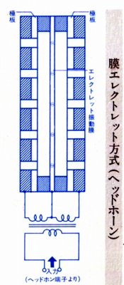
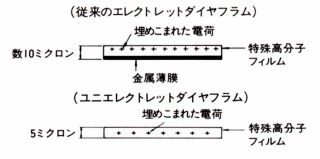
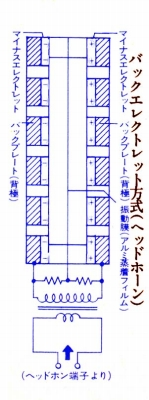
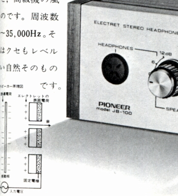
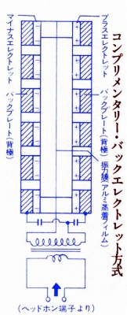

エレクレット・コンデンサー型ヘッドフォンのタイプについて
エレクレット・コンデンサー型ヘッドフォンは、エレクトレットの電荷をどこに配置するかで、「膜エレクレット・コンデンサー型」と「バックエレクレット・コンデンサー型」に分かれる。
1.膜エレクレット型
エレクトレットの電荷を振動膜に持たせるタイプ。振動膜に電荷を埋め込む為、純コンデンサー型やバックエレクレット型に比べると、コンデンサー型ヘッドフォンの「売り」の一つである「振動膜の薄さ」という点で不利である。一方、バックプレートの構造が簡素になり、また音道の設置の自由度が高く、バックエレクレット型より優れているとするメーカーもある。また膜厚の点でも、工夫の余地はあった。TECHNICS（テクニクス）/PANASONIC（ パナソニック）のEAH-80がこの形式で最初の機種らしい。FONTEK RESEARCH フォンテック・リサーチは、全面的に膜エレクトレット型であるし、ソニーのECR-400、ECR-500なども膜エレクトレット型である。また、膜厚から考えてSTAXのエレクトレット型も膜エレクトレット型だと思われる。
 
2.バックエレクレット型
エレクトレットと振動膜を分離させた方式。つまりバックプレートにエレクトレットを合わせた形式。振動膜に電荷を埋め込まない分、膜素材の薄さ、材質の自由度が上がるとされる。パイオニアのSE-100Jがこの形式及びエレクトレット型全体でも世界初の機種らしい（＊）。オーレックスは全面的にバックエレクレット型とその発展形であり、他の例ではオーディオテクニカの第３世代のコンデンサー型(ATH-70,80)がバックエレクレット・コンデンサー型となっている。

＊パイオニアのSE-100Jについて
パイオニアのSE-100Jの発売は1971年、東芝のカタログでも、この年に「他社」から最初のエレクレット・コンデンサー型ヘッドホンが出た、としている。なお、東芝のカタログでは、自社が世界初のバックエレクレット型としているが、当サイトではSE-100Jがバックエレクレット型であった、と判断している。論拠は�@膜厚が4ミクロンと、東芝の廉価モデル（HR-710など）並みに薄く、膜エレクトレットとは、考えにくい、�A当時のパイオニアの広告の動作原理図がバックエレクレット型らしきものである。

（1971年のパイオニアの広告）
3.コンプリメンタリー・バックエレクレット型
オーレックスがバックエレクレット・コンデンサー型を発展させた方式。それぞれのバックプレートにプラスとマイナスの電極をもったエレクトレットを合わせ、膜をプッシュ・プルする力が向上する方式らしい。オーレックスによれば、電圧換算で1000V級の効果があるとしている。従来方式と比較して+6dBの感度アップ効果があった、という。
